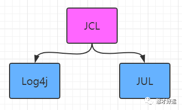
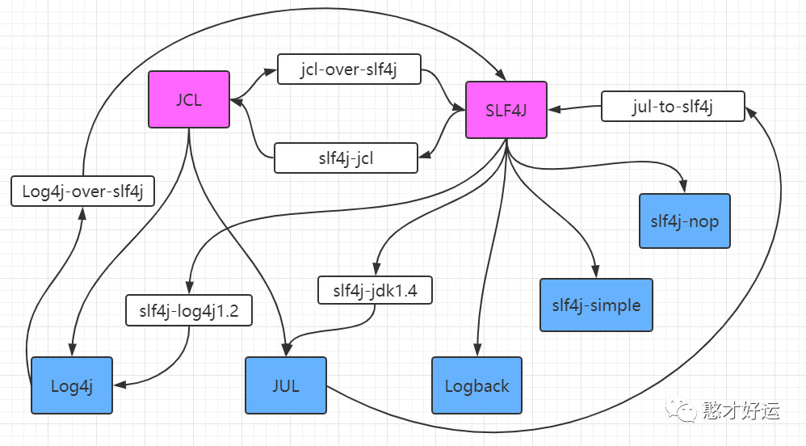
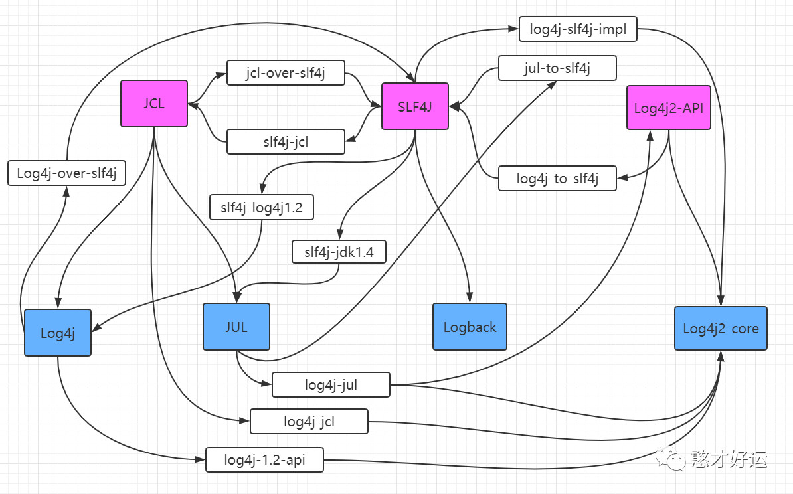
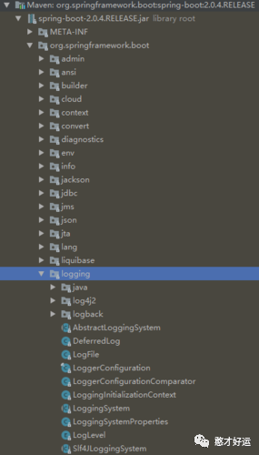

Java日志框架历史演进
日志作为逻辑追踪、线上问题排查、监控报警的有效基础利器被开发人员所熟知。问题发现、定位到解决都离不开它，而且从它的演进过程也能看到现代互联网发展的一个缩影。
print、alert、echo
互联网发展的早期，不管是C/S模式（客户端+服务端模式）还是B/S模式（浏览器+服务端模式），因为只有前端和后端交互这一层，验证逻辑基本上用的是前端alert，后台用System.out.print，服务器用echo命令回显。链路短，基本上够用。
JUL
Java Util Logging简称JUL，是JDK 中自带的log功能。虽然是官方自带的log lib，JUL的使用确不广泛。主要原因:
JUL从JDK1.4 才开始加入(2002年)，当时各种第三方log lib已经被广泛使用了。Java Logging API提供了七个日志级别用来控制输出。这七个级别分别是：SEVERE、WARNING、INFO、CONFIG、FINE、FINER、FINEST。
JUL早期存在性能问题，到JDK1.5上才有了不错的进步，但现在和Logback/Log4j2相比还是有所不如。
JUL的功能不如Logback/Log4j2等完善，比如Output Handler就没有Logback/Log4j2的丰富，有时候需要自己来继承定制，又比如默认没有从ClassPath里加载配置文件的功能。
Log4j 1.x
Log4j 是在 Logback 出现之前被广泛使用的 Log Lib, 由 Gülcü 于2001年发布，后来成为Apache 基金会的顶级项目。Log4j 在设计上非常优秀，对后续的 Java Log 框架有长久而深远的影响，也产生了Log4c, Log4s, Log4perl 等到其他语言的移植。
通过使用Log4j，我们可以控制日志信息输送的目的地是控制台、文件、GUI组件，甚至是套接口服务器、NT的事件记录器、UNIX Syslog守护进程等；我们也可以控制每一条日志的输出格式；通过定义每一条日志信息的级别，我们能够更加细致地控制日志的生成过程。最令人感兴趣的就是，这些可以通过一个配置文件来灵活地进行配置，而不需要修改应用的代码。Log4j也有七种日志级别：OFF、FATAL、ERROR、WARN、INFO、DEBUG和TRACE。Log4j 的短板在于性能，在Logback 和 Log4j2 出来之后，Log4j的使用也减少了。
通过使用Log4j，可控制日志信息输送的目的地是控制台、文件、数据库等。也可以控制每一条日志的输出格式，通过定义每一条日志信息的级别，能够更加细致的控制日志的生成过程。Log4j支持两种格式的配置文件：properties和xml。包含三个主要的组件：Logger、appender、Layout。
JCL
JCL是Jakarta Commons-Logging的缩写，Jakarta在这里指的是一个组织，而不是印度的首都雅加达。Jakarta，一个早期的Apache开源项目，用于管理各个Java子项目，诸如Tomcat, Ant, Maven, Struts, JMeter, Velocity, JMeter, Commons等。2011年12月，在所有子项目都被迁移为独立项目后，Jakarta名称就不再使用了。
JCL诞生的初衷是因为Java自身的一些包用了JUL，而Log4j用户使用的有很多，那么JCL就是提供一套API来实现不同Logger之间的切换。JCL 是一个Log Facade，只提供 Log API，不提供实现，然后有 Adapter 来使用 Log4j 或者 JUL 作为Log Implementation。
就像之前所说，JDK现在带了自己的JUL，然后又有第三方的 Log4j 等日志库存在，不同的项目可能各自使用了不同的日志库。如果你的项目依赖的其他 lib 各自使用了不同的日志库，你想控制日志行为，就需要针对每个日志库都写一个配置文件，是不是很酸爽?
然后这个时候 JCL 就出现了。在程序中日志创建和记录都是用JCL中的接口，在真正运行时，会看当前ClassPath中有什么实现，如果有Log4j 就是用 Log4j, 如果啥都没有就是用 JDK 的 JUL。
这样，在你的项目中，还有第三方的项目中，大家记录日志都使用 JCL 的接口，然后最终运行程序时，可以按照自己的需求(或者喜好)来选择使用合适的Log Implementation。如果用Log4j, 就添加 Log4j 的jar包进去，然后写一个 Log4j 的配置文件；如果喜欢用JUL，就只需要写个 JUL 的配置文件。如果有其他的新的日志库出现，也只需要它提供一个Adapter，运行的时候把这个日志库的 jar 包加进去。
到这个时候一切看起来都很简单，很美好。接口和实现做了良好的分离，在统一的JCL之下，不改变任何代码，就可以通过配置就换用功能更强大，或者性能更好的日志库实现。这种简单美好一直持续到SLF4J出现。
SLF4J/Logback
SLF4J(The Simple Logging Facade for Java) 和 Logback 也是Gülcü创立的项目，其创立主要是为了提供更高性能的实现。其中，SLF4j 是类似于JCL 的Log Facade，Logback 是类似于Log4j 的 Log Implementation。
之前已经说过，Apache 有了个JCL，用来做各种Log lib统一的接口，如果 Gülcü 要搞一个更好的 Log 实现的话，直接写一个实现就好了，为啥还要搞一个和SLF4J呢?
原因是Gülcü 认为 JCL 的 API 设计得不好，容易让使用者写出性能有问题的代码。
比如在用 JCL 输出一个 debug 级别的 log:
1 | logger.debug("start process request, url:" + url); |
这个有什么问题呢？一般生产环境 log 级别都会设到 info 或者以上，那这条 log 是不会被输出的。然而不管会不会输出，这其中都会做一个字符串连接操作，然后生产一个新的字符串。如果这条语句在循环或者被调用很多次的函数中，就会多做很多无用的字符串连接，影响性能。
所以 JCL 的最佳实践推荐这么写：
1 | if (logger.isDebugEnabled()) { |
然而开发者常常忽略这个问题或是觉得麻烦而不愿意这么写。所以SLF4J提供了新的API，方便开发者使用:
logger.debug(“start process request, url:{}”, url);
这样的话，在不输出 log 的时候避免了字符串拼接的开销；在输出的时候需要做一个字符串format，代价比手工拼接字符串大一些，但是可以接受。
而 Logback 则是作为 Log4j 的继承者来开发的，提供了性能更好的实现，异步 logger，Filter等更多的特性。
Logback有三个模块：
-
logback-core：日志处理核心组件
-
logback-classic：完整的实现了SLF4j API，用于切换日志实现。
-
logback-access：与Servlet容器集成提供通过http来访问日志的功能。
因为logback比log4j大约快10倍、消耗更少的内存，迁移成本也很低，自动压缩日志、支持多样化配置、不需要重启就可以恢复I/O异常等优势，又名噪一时。
现在事情变复杂了。我们有了两个流行的 Log Facade，以及三个流行的 Log Implementation。Gülcü 是个追求完美的人，他决定让这些Log之间都能够方便的互相替换，所以做了各种 Adapter 和 Bridge 来连接:
可以看到甚至 Log4j 和 JUL 都可以桥接到SLF4J，再通过 SLF4J 适配到到 Logback!
在这里需要注意不能搞出循环的桥接，比如下面这些依赖就不能同时存在:
-
jcl-over-slf4j 和 slf4j-jcl
-
log4j-over-slf4j 和 slf4j-log4j12
-
jul-to-slf4j 和 slf4j-jdk14
Log4j2
维护 Log4j 的人不这样想，他们不想坐视用户一点点被 SLF4J /Logback 蚕食，继而搞出了 Log4j2。
Log4j2 和 Log4j1.x 并不兼容，设计上很大程度上模仿了 SLF4J/Logback，性能上也获得了很大的提升。Log4j2与Logback非常类似，但是它有自己的亮点：如插件式结构、配置文件优化、异步日志
Log4j2 也做了 Facade/Implementation 分离的设计，分成了 log4j-api 和 log4j-core。Log4j2是Log4j的升级，它比其前身Log4j 1.x提供了重大改进，并提供了Logback中可用的许多改进，同时修复了Logback架构中的一些固有问题。
从GitHub的更新日志来看，Logback已经有半年没有更新了，而作为知名组织的Apache下的Log4j2的更新却是非常活跃的，Log4j 1.x 于2015年8月停止维护更新了
现在好了，我们有了三个流行的Log 接口和四个流行的Log实现，如果画出桥接关系的图来会是什么样子呢?
Java日志框架最佳实践
总是使用Log Facade，而不是具体Log Implementation
正如之前所说的，使用 Log Facade 可以方便的切换具体的日志实现。而且，如果依赖多个项目，使用了不同的Log Facade，还可以方便的通过 Adapter 转接到同一个实现上。如果依赖项目使用了多个不同的日志实现，就麻烦的多了。
具体来说，现在推荐使用 Log4j-API 或者 SLF4j，不推荐继续使用 JCL。
《阿里巴巴Java开发手册》其中一条规范做了【强制】要求：
【强制】应用中不可直接使用日志系统（Log4j、Logback)中的API，而应依赖使用日志框架SLF4J中的API，使用门面模式的日志框架，有利于维护和各个类的日志处理方式统一。
1 | import org.slf4j.Logger; |
只添加一个 Log Implementation依赖
毫无疑问，项目中应该只使用一个具体的 Log Implementation，建议使用 Logback 或者Log4j2。如果有依赖的项目中，使用的 Log Facade不支持直接使用当前的 Log Implementation，就添加合适的桥接器依赖。
具体的日志实现依赖应该设置为optional和使用runtime scope
项目中，Log Implementation的依赖强烈建议设置为runtime scope，并且设置为optional。例如项目中使用了 SLF4J 作为 Log Facade，然后想使用 Log4j2 作为 Implementation，那么使用 maven 添加依赖的时候这样设置:
1 | <dependency> |
设为optional，依赖不会传递，这样如果你是个lib项目，然后别的项目使用了你这个lib，不会被引入不想要的Log Implementation 依赖；
Scope设置为runtime，是为了防止开发人员在项目中直接使用Log Implementation中的类，而不适用Log Facade中的类。
如果有必要, 排除依赖的第三方库中的Log Impementation依赖
这是很常见的一个问题，第三方库的开发者未必会把具体的日志实现或者桥接器的依赖设置为optional，然后你的项目继承了这些依赖——具体的日志实现未必是你想使用的，比如他依赖了Log4j，你想使用Logback，这时就很尴尬。另外，如果不同的第三方依赖使用了不同的桥接器和Log实现，也极容易形成环。
这种情况下，推荐的处理方法，是使用exclude来排除所有的这些Log实现和桥接器的依赖，只保留第三方库里面对Log Facade的依赖。
比如阿里的JStorm就没有很好的处理这个问题，依赖jstorm会引入对Logback和log4j-over-slf4j的依赖，如果你想在自己的项目中使用Log4j或其他Log实现的话，就需要加上excludes:
1 | <dependency> |
避免为不会输出的log付出代价
Log库都可以灵活的设置输出界别，所以每一条程序中的log，都是有可能不会被输出的。这时候要注意不要额外的付出代价。
先看两个有问题的写法：
1 | logger.debug("start process request, url: " + url); |
第一条是直接做了字符串拼接，所以即使日志级别高于debug也会做一个字符串连接操作；第二条虽然用了SLF4J/Log4j2 中的懒求值方式来避免不必要的字符串拼接开销，但是toJson()这个函数却是都会被调用并且开销更大。
推荐的写法如下:
1 | logger.debug("start process request, url:{}", url); // SLF4J/LOG4J2 |
日志格式中最好不要使用行号，函数名等字段
原因是，为了获取语句所在的函数名，或者行号，log库的实现都是获取当前的stacktrace，然后分析取出这些信息，而获取stacktrace的代价是很昂贵的。如果有很多的日志输出，就会占用大量的CPU。在没有特殊需要的情况下，建议不要在日志中输出这些这些字段。
最后， log中不要输出稀奇古怪的字符！
部分开发人员为了方便看到自己的log，会在log语句中加上醒目的前缀，比如:
1 | logger.debug("========start process request======="); |
虽然对于自己来说是方便了，但是如果所有人都这样来做的话，那log输出就没法看了！正确的做法是使用grep 来看只自己关心的日志。
Spring Boot自带Logback的使用
Spring Boot默认集成了Logback，可以开箱即用，非常方便。因为spring-boot-starter-logging是Logback的日志实现，而Spring Boot启动项spring-boot-starter又依赖了spring-boot-starter-logging，所以Spring Boot就默认集成了Logback，包依赖如下图：
日志是默认控制台输出的，我们程序启动的时候就使用Logback，日志组成解读：
-
日期和时间：毫秒精度，易于排序
-
日志级别：trace、debug、info、warn、error（日志级别依次从低到高）
-
进程ID
-
—分隔符
-
线程名称：括在方括号中(可以截断控制台输出)
-
记录器名称：这通常是源类名(通常缩写)
-
日志具体信息
日志输出到文件
如果需要输出日志到文件，只需要在application.properties配置文件设置：logging.file或logging.path，示例如下：
1 | logging.level.root=info |
可以通过设置日志的级别，忽略更低级别的日志输出。
注意：logging.file和logging.path设置一个属性即可，如果两个都设置，则以logging.file为主，logging.path无效。
日志文件容量设置：使用"logging.file.max-history"属性为日志最大容量设置，默认10M超过则分割为多个文件。
日志服务在ApplicationContext创建前就初始化了，所以通过设置属性和传统的配置XML文件，可以对日志进行管理和控制。
只需要在src/main/resources下，创建好约定名称的XML文件，即可完成对日志系统的设置，不同的日志系统有不同的约定名称，如下列表：
日志名称
logbacklogback-spring.xml、 logback-spring.groovy、
logback.xml或者logback.groovy
log4j2log4j2-spring.xml或者log4j2.xml
Spring Boot官方建议使用“-spring”的命名规则，进行日志配置，如：logback-spring.xml而不是logback.xml。
当然你也可以自定义日志名称，只需要在application.properties配置即可，代码如下：
1 | logging.config=classpath:logging-config.xml |
1 |
|
代码中使用日志
1 | private Logger logger = LoggerFactory.getLogger(this.getClass()); |
如果在Spring Boot中使用Lombok来管理基础的Java Bean对象，可以直接只用@Log，@Log4j2或者@Slf4j等Java注解，具体的操作代码示例可以参考下述链接：
https://howtodoinjava.com/spring-boot2/logging/logging-with-lombok/
提示：这个howtodoinjava这个网站上有非常好的代码示例，值得收藏。
Spring Boot使用Slf4j集成Log4j2
Spring Boot使用Slf4j集成Log4j2时候，应该注意Maven的POM文件应该去除掉Logback的依赖，否则会出现SLF4J Warning: Class Path Contains Multiple SLF4J Bindings的错误，原因还是因为上文提到的出现了环状依赖，其中的pom.xml配置文件如下：
1 | <dependency> |
这里需要注意的是Spring Boot的每一个组件在引入的过程中都应该去除上述旧的log依赖，不能只是spring-boot-starter-web组件去除该log依赖
深入JVM分析spring-boot应用hibernate-validator NoClassDefFoundError
上述去除掉org.jboss.logging.jboss-logging依赖可能会报链接中错误，需要加入这个依赖才能正常启动应用
参考链接
Spring Boot（十）日志Logback和Log4j2集成与日志发展史
为什么阿里巴巴禁止工程师直接使用日志系统(Log4j、Logback)的API
使用Slf4j集成Log4j2构建项目日志系统的完美解决方案
Spring boot 2.0替换默认日志框架logback到Slf4j+log4j2
SLF4J Warning: Class Path Contains Multiple SLF4J Bindings
关注【憨才好运】微信公众号，了解更多精彩内容⬇️⬇️⬇️